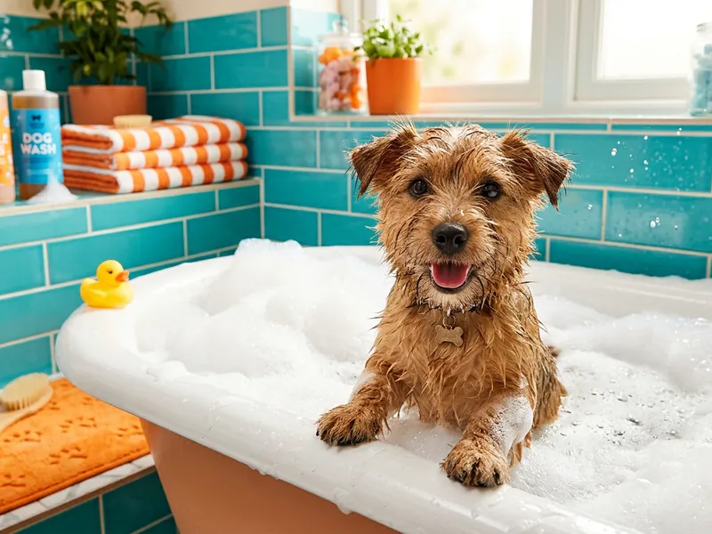
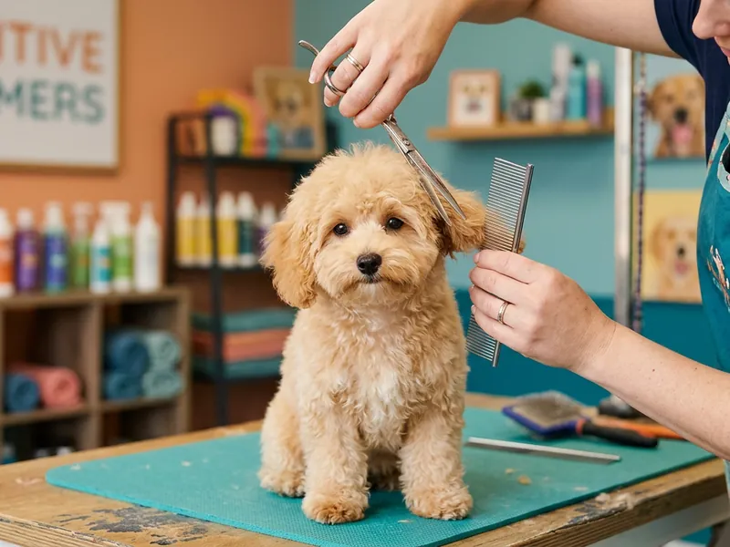
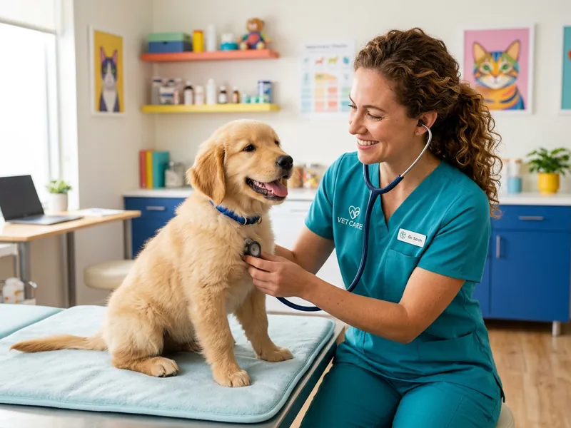

Serviços e preços
Banho, tosa e saúde — sem surpresas na conta
Marcamos com tempo entre animais para que ninguém ande a correr. Antes de começarmos, dizemos quanto vai custar e quanto tempo demora. Se algo mudar pelo caminho, telefonamos.

Grooming
Banho & tosa com calma
Cada banho começa com uma conversa: perguntamos ao tutor o que correu bem da última vez, que zonas irritam o animal e que perfume prefere. Só depois ligamos a água.
Incluído em todos os serviços de grooming
- Escovagem e desembaraço prévio
- Banho com champô adequado ao tipo de pelo
- Secagem à mão com sopro suave, sem jaulas
- Corte de unhas, limpeza de ouvidos e escovagem final
- Foto do antes e depois enviada por WhatsApp
Entrega em 60–90 minutos (porte pequeno) ou até 2h30 com tosa completa. Se preferir, avisamos quando estiver pronto e pode passear na Baixa entretanto.
Tosa
Três tipos de tosa, três objetivos
- Higénica — zonas íntimas, patas e barriga. Para manter tudo limpo entre tosas, com aspeto natural.
- De manutenção — máquina com pente, mantém o comprimento mas alivia o calor e os nós.
- Completa ou de raça — corte à tesoura e máquina, seguindo o padrão da raça ou uma forma à sua escolha.
Se não souber qual faz sentido para o seu animal, traga uma foto. Explicamos o que dá para fazer com o pelo que ele tem hoje — e o que é preciso deixar crescer primeiro.


Saúde
Consultas veterinárias no mesmo espaço
A clínica funciona dentro da loja, por marcação. Isso significa menos viagens para o tutor e nenhuma mudança de ambiente para o animal, que já conhece o espaço e a equipa.
- Consulta geral e de seguimento, com relatório escrito
- Vacinação e desparasitação com registo no boletim
- Microchip e registo no SIAC no próprio dia
- Consulta de nutrição para animais com peso a mais ou alergias
Urgências: encaminhamos para o hospital veterinário de serviço em Coimbra e ajudamos a contactar o transporte.
Preçário
Valores por porte do animal
Preços com IVA incluído, válidos em 2026. Para animais com pelo muito denso, nós ou mais de 25 kg, confirmamos o valor por telefone antes da marcação.
| Serviço | Pequeno até 10 kg |
Médio 10–25 kg |
Grande mais de 25 kg |
|---|---|---|---|
| Banho simples | 15 € | 20 € | 27 € |
| Banho + escovagem completa | 18 € | 24 € | 32 € |
| Tosa higiénica | 20 € | 26 € | 34 € |
| Tosa completa | 28 € | 35 € | 45 € |
| Banho + tosa completa | 35 € | 45 € | 55 € |
| Desembaraçar nós (por 15 min) | 8 € | 10 € | 12 € |
Extras e serviços avulso
- Corte de unhas — 5 €
- Limpeza de ouvidos — 4 €
- Escovagem de dentes — 5 €
- Máscara hidratante para pelo seco — 5 €
- Aplicação de antiparasitário externo — 6 €
- Recolha e entrega ao domicílio em Coimbra — 3 € (grátis com banho + tosa)
Consultas veterinárias
- Consulta geral — 35 €
- Consulta de seguimento (até 15 dias, mesmo motivo) — 20 €
- Vacinação (inclui vacina) — 40 €
- Microchip + registo SIAC — 45 €
- Desparasitação interna e externa — desde 12 €
- Consulta de nutrição — 30 €
Em consulta com o banho no mesmo dia, descontamos 3 € no serviço de grooming.
Como funciona
Da marcação ao abano da cauda
Sem burocracia nem chamadas ao meio-dia. Três passos e está feito.
Começar marcação-
Escolha o serviço, o dia e a hora
No formulário de marcação. Só aparecem horários realmente disponíveis.
-
Confirmamos por WhatsApp
Em menos de 2 horas úteis recebe a confirmação e o preço final.
-
Traga o seu animal
Se preferir, recolhemos em casa. No fim, enviamos a foto e o recibo.
Dúvidas frequentes
Perguntas que nos fazem todos os dias
-
Preciso de marcação para o banho e tosa?
Recomendamos, sobretudo de sexta a sábado, quando enchemos mais depressa. Pode marcar online em menos de um minuto ou ligar-nos. Sem marcação, atendemos conforme a disponibilidade do dia.
-
Quanto tempo demora o serviço?
Um banho completo demora entre 60 e 90 minutos em animais de porte pequeno. Banho com tosa completa pode chegar às duas horas e meia. Avisamos por WhatsApp assim que estiver pronto — pode entretanto dar uma volta pela Baixa.
-
O meu animal fica fechado numa gaiola?
Não. Temos boxes individuais abertas, com cama e água, e não usamos jaulas de secagem. A secagem é feita à mão, com sopro suave e temperatura controlada, por uma pessoa dedicada ao seu animal.
-
Os produtos são seguros para gatos e cachorros?
Sim. Usamos champôs sem sulfatos e com pH adequado a cada espécie. Aceitamos cachorros a partir das 12 semanas, com o plano de vacinação em dia e autorização do veterinário.
-
O meu animal tem nós ou parasitas. E agora?
Caso tenha nós, avaliamos à chegada e dizemos quanto tempo extra dá trabalho e o custo, antes de começar. Se tiver pulgas ou ácaros, pedimos um tratamento prévio e reagendamos sem custos — é uma questão de proteger os outros animais que passam por cá.
-
Posso ficar a ver o serviço?
Pode esperar na loja, com um café. Durante o banho preferimos trabalhar sem tutores presentes, porque a maioria dos animais fica mais calma. Em troca, enviamos fotos.
-
Que formas de pagamento aceitam?
Dinheiro, MB Way, cartão multibanco e transferência. Emitimos fatura-recibo com NIF, útil se tiver seguro de saúde animal e quiser pedir reembolso.
Vamos tratar do próximo banho?
Escolha o dia e a hora no formulário. Se preferir falar com uma pessoa, ligue-nos — atendemos das 9h às 19h.